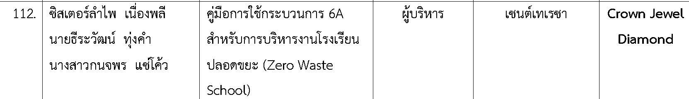

2567 · รางวัลครูดีเด่น#
โล่ทองครูดีเด่น ระดับมัธยมศึกษาปีที่ 4–6
ได้รับโล่ทองครูดีเด่น ประจำปี 2567 ระดับชั้นมัธยมศึกษาปีที่ 4–6 จากฝ่ายการศึกษา อัครสังฆมณฑลกรุงเทพฯ ตามใบกรอกประวัติผู้ช่วยผู้บริหารและครูดีเด่น
บทบาท: ผู้ได้รับรางวัลโดยตรง
ประมวลรางวัล ผลงานนวัตกรรม การเป็นครูที่ปรึกษานักเรียน และการถ่ายทอดความรู้ด้านสิ่งแวดล้อม
ได้รับโล่ทองครูดีเด่น ประจำปี 2567 ระดับชั้นมัธยมศึกษาปีที่ 4–6 จากฝ่ายการศึกษา อัครสังฆมณฑลกรุงเทพฯ ตามใบกรอกประวัติผู้ช่วยผู้บริหารและครูดีเด่น
บทบาท: ผู้ได้รับรางวัลโดยตรง
รายการผลงานลำดับที่ 112 ของโรงเรียนเซนต์เทเรซา ระบุชื่อคู่มือการใช้กระบวนการ 6A สำหรับการบริหารงานโรงเรียนปลอดขยะ (Zero Waste School) ในกลุ่ม ผู้บริหาร โดยแสดงระดับ Crown Jewel Diamond ตามภาพตารางที่ได้รับ
บทบาท: ผู้มีรายชื่อร่วมจัดทำผลงานตามรายการในตาราง

ผลงาน “รูปแบบ 4A สำหรับการดำเนินงานโครงการวิจัยในชั้นเรียนสู่นวัตกรรมทางการศึกษา” ในการประกวด ONE TEACHER ONE INNOVATION ระดับชาติ ครั้งที่ 7 จัดโดยมหาวิทยาลัยราชพฤกษ์ ร่วมกับเครือข่ายการพัฒนานวัตกรรมเพื่อการศึกษา โรงเรียนในเครือคณะภคินีพระหฤทัยของพระเยซูเจ้าแห่งกรุงเทพฯ
บทบาท: คณะผู้สร้างสรรค์ผลงานร่วม
ได้รับรางวัลศิษย์เก่าดีเด่นเนื่องในโอกาสวันครู ปีการศึกษา 2568 มอบโดยวิทยาลัยการฝึกหัดครู มหาวิทยาลัยราชภัฏพระนคร
บทบาท: ผู้ได้รับรางวัลโดยตรง
รางวัลระดับเหรียญเงินจากการประกวดแนวปฏิบัติที่เป็นเลิศ (Best Practice) ด้วยกระบวนการคิดขั้นสูงเชิงระบบ GPAS 5 Steps เพื่อรองรับการประกันคุณภาพภายนอกของสถานศึกษา กลุ่มสาระการเรียนรู้การงานอาชีพ ระดับมัธยมศึกษา
บทบาท: ผู้ได้รับรางวัลร่วม
ได้รับพระราชทานรางวัลชมเชยในการประกวดเรียงความระดับมัธยมศึกษาตอนปลาย งานวันกรมพระปรมานุชิตชิโนรส ประจำปีการศึกษา 2564 ตามข้อความประชาสัมพันธ์ที่ได้รับ
บทบาท: ได้รับการระบุชื่อร่วมกับนักเรียนในการรับรางวัล
นักเรียนได้รับเกียรติบัตรรางวัลขวัญใจ CEO ระดับเหรียญทอง ในการแข่งขัน LiveStorm Creators Challenge: U R The Next Star (ศึกค้นหาดาวรุ่งครีเอเตอร์ไลฟ์สด) ณ มหาวิทยาลัยเทคโนโลยีราชมงคลสุวรรณภูมิ ศูนย์สุพรรณบุรี
บทบาท: ครูที่ปรึกษานักเรียน
ณ สถาบันเทคโนโลยีไทย-ญี่ปุ่น การแข่งขันนำเสนอโครงงานระบบต้นแบบ IoT เพื่อพัฒนาธุรกิจ ทีมเครื่องให้อาหารไก่ไข่และเก็บไข่อัตโนมัติได้รับรางวัลชนะเลิศพร้อมทุนการศึกษา 10,000 บาท และทีมป้ายสัญญาณจราจรอัตโนมัติได้รับรางวัลชมเชยพร้อมทุนการศึกษา 2,000 บาท
บทบาท: ครูที่ปรึกษาร่วมกับนายสุเทพ สุขจันทร์
ผลงาน “งานวิจัยการพัฒนาแผ่นห่ออาหารจากไข่ผำเพื่อสุขภาพ” เข้ารอบชิงชนะเลิศและบทคัดย่อได้รับการตีพิมพ์ใน e-Book of Abstract ของคณะเทคโนโลยีชีวภาพ มหาวิทยาลัยอัสสัมชัญ ภายในงานประชุมวิชาการนักวิทยาศาสตร์รุ่นเยาว์ด้านอาหารแห่งอนาคตเพื่อความยั่งยืน 2025
บทบาท: ครูที่ปรึกษาร่วมกับครูศราวุธ วงศ์แก้ว และนางสาวกนจพร แซ่โค้ว
ผลงานเครื่องเปลี่ยนถ่ายน้ำอัตโนมัติในกลุ่มการเกษตรระดับมัธยมศึกษา ได้รับเกียรติบัตรและเหรียญเงินจากสำนักงานการวิจัยแห่งชาติ (วช.) จัดประกวด ณ ไบเทค บางนา กรุงเทพมหานคร
บทบาท: ครูที่ปรึกษาร่วมกับนางสาวจิราวรรญ จันทจร
ในการแข่งขันทักษะทางวิชาการงาน “เปิดโลกปริญญาตรีกับ BSU ครั้งที่ 18” ณ มหาวิทยาลัยกรุงเทพสุวรรณภูมิ ทีมได้รับเกียรติบัตรและทุนการศึกษา 3,000 บาท พร้อมคูปองการศึกษามูลค่า 15,000 บาท ตามข้อความประชาสัมพันธ์
บทบาท: ครูที่ปรึกษาร่วมกับครูปนัดดา เด็ดดวง ครูนันทกา บินตาฮี และครูสุเทพ สุขจันทร์
นักเรียนโรงเรียนเซนต์เทเรซาได้รับรางวัลชนะเลิศการแข่งขันตอบปัญหาทางบัญชีระดับมัธยมศึกษาตอนปลาย ในโครงการสัปดาห์วิทยาศาสตร์แห่งชาติ ครั้งที่ 4 ตามข้อความประชาสัมพันธ์ จัดร่วมกับมหาวิทยาลัยขอนแก่น
บทบาท: ครูผู้ควบคุมและดูแลนักเรียน
ร่วมอบรมเชิงปฏิบัติการหัวข้อ “แนวทางการจัดการเรียนรู้และการประเมินเพื่อพัฒนาสู่การยกระดับผลสัมฤทธิ์ทางการเรียน และคะแนน O-NET ของนักเรียนระดับขั้นพื้นฐาน” ตามเอกสารประวัติปี 2566
บทบาท: ผู้ช่วยวิทยากรอบรมเชิงปฏิบัติการ
บรรยายและฝึกปฏิบัติเรื่องการเขียนแผนการจัดการเรียนรู้เพื่อพัฒนาสมรรถนะผู้เรียน บนพื้นฐานหลักสูตรแกนกลางการศึกษาขั้นพื้นฐาน พุทธศักราช 2551 ฉบับปรับปรุง พ.ศ. 2560 ตามเอกสารประวัติปี 2565
บทบาท: วิทยากรอบรมเชิงปฏิบัติการ
บรรยายเรื่อง “รวมพลังรักษ์โลก ร่วมลดการเปลี่ยนแปลงสภาพภูมิอากาศ” ณ อารามภคินีรักกางเขนแห่งท่าแร่ จังหวัดสกลนคร
บทบาท: วิทยากรบรรยาย
ร่วมเสวนาหัวข้อ “โรงเรียนยุคใหม่ ปรับเปลี่ยนวิถีชีวิต มุ่งสู่สังคมคาร์บอนต่ำ” ในเวทีพื้นที่ต้นแบบลดก๊าซเรือนกระจกและปรับตัวต่อการเปลี่ยนแปลงสภาพภูมิอากาศ ณ ชะอำ จังหวัดเพชรบุรี
บทบาท: ผู้ร่วมเสวนาแลกเปลี่ยนแนวทางด้านสิ่งแวดล้อม
ชื่อผลงาน: “การพัฒนานวัตกรและผู้ประกอบการรุ่นเยาว์ด้วยการจัดการเรียนรู้โดยใช้ปัญหาเป็นฐาน (PBL) ร่วมกับ Business Model Canvas สำหรับนักเรียนชั้นมัธยมศึกษาปีที่ 5”
ผู้จัดทำร่วม: นายธีระวัฒน์ ทุ่งคำ และ นางสาวกนจพร แซ่โค้ว โรงเรียนเซนต์เทเรซา
ประเภทหลักฐาน: เกียรติบัตรรับรองการเข้าร่วมประกวด ไม่ใช่รางวัลชนะเลิศ
ที่มา: ข้อมูลประชาสัมพันธ์และรายละเอียดผลงานที่เจ้าของเว็บไซต์ให้ไว้ รางวัลของนักเรียนและโรงเรียนแสดงแยกจากรางวัลส่วนบุคคล โดยรายการที่ไม่มีปีระบุไว้จะไม่สมมติปีขึ้นเอง ข้อมูลนี้ยังไม่ได้ตรวจสอบประกาศผลอย่างเป็นทางการจากผู้จัดทุกรายการ